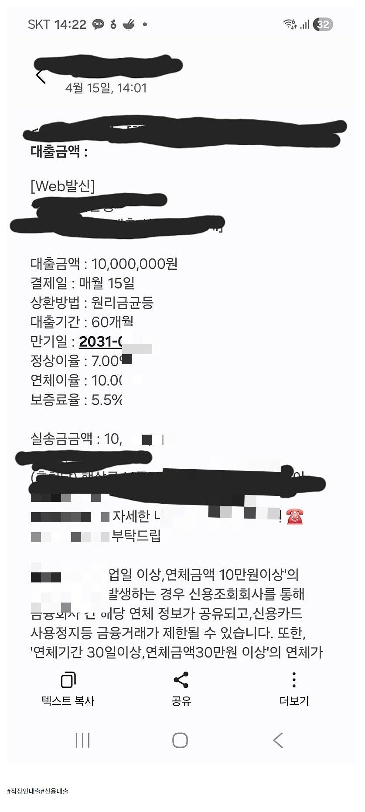

[직장인대출] 개인회생면책이력보유 직장인대출 2건 2300조영우이사님과의대출후기
조이사님께 몇년전에도 도움받아본 기억에 연락드려
필요한자금 확보에 정말 큰도움 받았습니다.직장인 / 4대가입 / 4개월 근무중 / 연소득 3000만원 / 작년도 개인회생 면책이력 보유

https://cafe.naver.com/cityman88/310846조이사님께 몇년전에도 도움받아본 기억에 연락드려
필요한자금 확보에 정말 큰도움 받았습니다.직장인 / 4대가입 / 4개월 근무중 / 연소득 3000만원 / 작년도 개인회생 면책이력 보유

https://cafe.naver.com/cityman88/310846